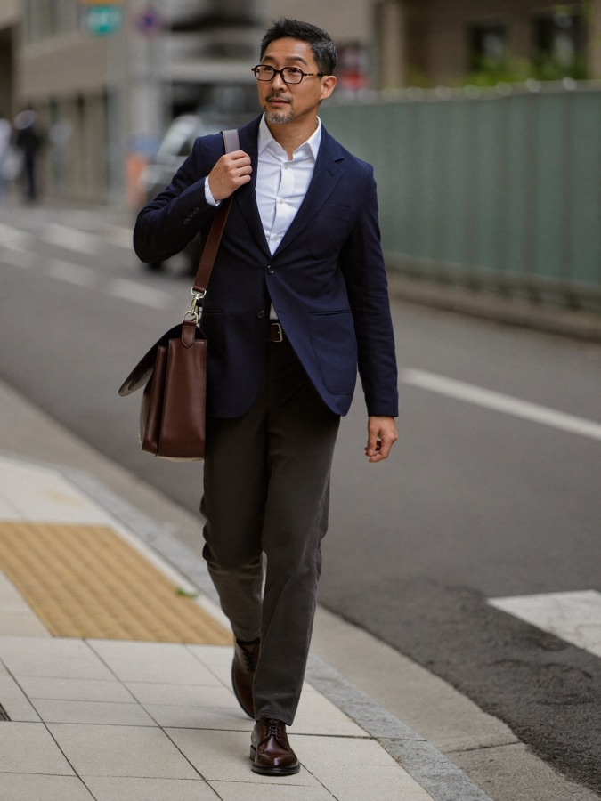

從三十多個候選畫像收斂成最重要的四個——每個人都涵蓋工作與生活兩種場景的敘述，讓討論產品方向、行銷語氣時有具體的人可以對照。人物照片為 AI 生成的虛構角色，非真實顧客。

陳彥廷 · 42歲陳彥廷
「工藝老饕」型
「我不是在買一雙鞋，是在確認做這雙鞋的人，跟我一樣在意細節。」
九點進辦公室，開會、看報告、跟團隊討論案子。皮鞋在會議室裡幾乎沒人會特別注意，但他自己知道，一雙好鞋走一整天不磨腳，是那種「別人看不出來、自己很清楚」的講究。下班後，他可能繞去中山店看看有沒有新款，跟熟識的店員聊十分鐘鞋子近況，不一定買，但這是他一週裡固定會做的小事。
週六下午，他常常一個人晃到熟悉的黑膠唱片行，換上比較輕鬆的襯衫和便鞋，不趕時間，翻唱片翻半小時也不奇怪。這是他一週裡最放鬆的時刻，跟辦公室裡的他判若兩人，但鞋子一樣講究——只是換了一雙更輕鬆的。每年安排 1–2 次日本旅遊，行程一定會排一兩間手工鞋店或選品店。
林品萱
「率性百搭女子」型
「我不是來找一雙特別的鞋，我是來找一雙我會一直穿的鞋。」
行銷企劃的日常是不斷開會、跑外部廠商、偶爾陪客戶看場地，一天走的路比坐辦公室的時間還多。她要的鞋子第一條件是「好走」，第二條件才是「好看」——樂福鞋、瑪莉珍、小白鞋這種百搭實穿款是她的菜，不太會被「Blucher 工法」這種說法打動，但會被「舒適耐走、上班逛街都能穿」打動。
週日早上，她喜歡一個人窩在民生社區的小咖啡館，點一杯拿鐵，帶本筆記本寫點東西或規劃下週的工作。下午可能晃去附近的花市或選品店，買點小盆栽、看看新出的生活雜貨。常常是跟伴侶一起逛街，但買的是自己要穿的——她重視「這雙鞋好不好搭配我平常的穿搭」勝過工法故事，也很在意「這家店讓女生逛起來自在不拘謹」這件事本身。
黃詩涵
「節慶儀式送禮人」型
「我要的不是最特別的那雙，是他收到會覺得『這人真的懂我』的那雙。」
行政或業務相關工作，日常就在處理大大小小的人情往來——記得誰的生日、誰快退休、哪個客戶下個月要調職。她平常自己不見得講究皮鞋，但很在意「送禮這件事的體面感」，進門市前通常已經上網做過功課，帶著明確的預算跟場合走進來，需要被說服的不是「要不要買」，是「買哪一款送最合適」。
她的生活圍繞著各種「該張羅」的場合轉——家庭聚餐、朋友生日、公司尾牙，她總是那個會提前想好要送什麼、訂好餐廳位子的人。閒暇時喜歡上花藝課或烘焙課，把「幫大家把場合準備好」當成一種樂趣而不是負擔。她重視包裝與儀式感，送禮服務、禮盒、附卡片這些細節對她的決策影響可能比鞋子本身的工法還大。
蔡秉軒
「一次性嘗鮮客」型
「我就是需要一雙面試穿的鞋，之後的事之後再說。」
他因為「人生第一雙皮鞋」「面試」這種明確的功能性需求，透過廣告、社群或朋友介紹，在電商買了一雙入門款德比或牛津鞋。對正式穿著還在摸索，鞋子對他來說是解決問題的工具，不是自我風格的展現，也還沒被任何一位店員記住、建立起關係。
下班或週末，他的行程通常是跟朋友約手搖飲、逛夜市、回家打電動或追劇，生活重心還不在「穿搭」這件事上。買完那雙皮鞋之後，沒有明確的理由讓他想起「該回 ORINGO 看看」，於是就成了那 80% 不會再回來的新客之一——不是不適合，是還沒被「轉正」。